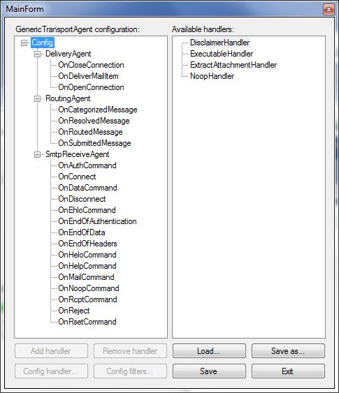
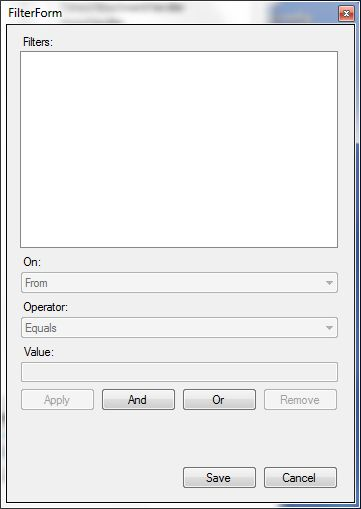

Der GenericExchangeTransportAgent bietet die Möglichkeit, auf Ereignisse des Exchange Servers zu reagieren und nach selbst definierten Filterregeln bestimmte Aktionen auszuführen.
Beim Lesen der Dokumentation werden Ihnen vier Begriffe immer wieder begegnen: "Agent", "Event", "Handler" und "Filter". Diese werden neben anderen Begriffen im Glossar erläutert.
Standardmäßig wird der GenericExchangeTransportAgent mit sechs Handlern ausgeliefert. Es steht Ihnen frei, weitere Handler zu entwickeln. Um das Einbinden von neuen Handlern zu erleichtern, setzt der GenericExchangeTransportAgent auf eine Art "Plugin-Mechanismus" auf Basis des sogenannten MEF (Managed Extensibility Framework).
Am einfachsten lässt sich die Funktionsweise an einem Beispiel zeigen. Nehmen wir an, Sie möchten, dass Mails von einem bestimmten Absender in ein von Ihnen definiertes Verzeichnis auf dem Server gespeichert werden. Hierzu würde es im einfachsten Fall reichen, einen Filter mit der Bedingung "FROM <absender@mail.com>" für den ExecutableHandler anzulegen sowie Export der Mail als EML zu aktivieren und das Ausgabeverzeichnis zu definieren. Dieser Handler wird dem "GenericSmtpReceiveAgent" dem Event "OnEndOfData" zugewiesen.
Dieses Beispiel werden Sie (neben weiteren, komplexeren Beispielen) im Abschnitt Konfiguration wiederfinden.
Die Installation erfolgt mittels eines einfachen PowerShell-Scripts. Hierzu öffnen Sie auf dem Server, auf dem der Exchange Server 2010 installiert ist, eine "Microsoft Exchange Management Shell", und navigieren mittels "cd <Zielverzeichnis>" in das Verzeichnis des GenericExchangeTransportAgents. Anschließend rufen Sie das Installationsscipt mittels ".\install.ps1" auf.
Sie können die Installation auch manuell durchführen. Hierzu öffnen Sie eine "Micrsosoft Exchange Management Shell", und navigieren mittels "cd <Zielverzeichnis>" in das Verzeichnis des GenericExchangeTransportAgents. Führen Sie nun folgende Befehle aus:
Die Konfiguration für den GenericExchangeTransportAgent wird in der Datei "config.xml" hinterlegt. Hierbei handelt es sich um ein XML-konformes Dokument. Möchten Sie eine eigene Konfiguration erstellen, können Sie dies selbsverständlich direkt in der XML-Datei machen. Einfacher und bequemer geht dies aber über das Konfigurationsprogramm vom GenericExchangeTransportAgent.
Starten Sie hierzu das Programm "GenericExchangeTransportAgent-Config.exe".
Abbildung 1: Hauptbildschirm
Dies ist der Hauptbildschirm des Konfigurationsprogramms. In der linken Baumansicht finden Sie unterhalb von "Config" die im Exchange Server registrierten Agents, darunter entsprechend Events, die diesem Agent zugeordnet sind.
In der rechten Baumansicht finden Sie die Handler, die Ihnen zur Verfügung stehen.
Fü:r den GenericExchangeTransportAgent wurden im Exchange Server zwei Agents installiert. Diese will kurz mit ihren Events kurz beschreiben:
RoutingAgent: Er ist für die Erweiterung der Hub Transport Serverrolle zuständig.
Es stehen folgende Events zur Verfügung:
OnCategorizedMessage: Dieses Event tritt auf, nachdem der Server, sofern benötigt, die Inhaltskonvertierung vorgenommen hat. Es ist das letzte auftretende Event, bevor der Exchange Server die Mail in die Zustellwarteschlange übergibt.
OnResolvedMessage: Dieses Event tritt auf, nachdem alle Empfäger der Mail aufgelöst wurden und bevor das weitere "Routing" bestimmt wird. Es kann z.B. benutzt werden, um pro Emfänger ein eigenes "Routing" vorzunehmen. (Siehe hierzu RoutingOverride und SetRoutingOverride)
OnRoutedMessage: Dieses Event tritt auf, nachdem der Server die Mail zum nächsten "Hop" weitergeleitet hat und bevor, falls benötigt, eine Inhaltskonvertierung durchgeführt wird.
OnSubmittedMessage: Dieses Event tritt auf, nachdem der Server die Mail aus der Übertragungswarteschlange genommen hat.
SmtpReceiveAgent: Er ist für die Erweiterung der Edge Transport Serverrolle zuständig.
Es stehen folgende Events zur Verfügung:
OnAuthCommand: Dieses Event tritt auf, wenn der Exchange Server ein SMTP AUTH Kommando emfängt und bevor der Exchange Server darauf antwortet.
OnConnect: Dieses Event tritt auf, wenn eine SMTP-Verbindung aufgebaut wird.
OnDataCommand: Dieses Event tritt auf, wenn der Exchange Server ein SMTP DATA Kommando empfängt.
OnDisconnect: Dieses Event tritt auf, wenn eine bestehende SMTP-Verbindung zum Exchange Server geschlossen wird.
OnEhloCommand: Dieses Event tritt auf, wenn der Exchange Server ein SMTP EHLO Kommando empfängt.
OnEndOfAuthentication: Dieses Event tritt auf, wenn der Exchange Server auf ein SMTP AUTH Kommando antwortet.
OnEndOfData: Dieses Event tritt auf, wenn der Exchange Server die Daten einer SMTP-Nachricht komlett empfangen hat.
OnEndOfHeaders: Dieses Event tritt auf, wenn der Exchange Server die Headers einer SMTP-Nachricht komplett empfangen hat.
OnHeloCommand: Dieses Event tritt auf, wenn der Exchange Server ein SMTP HELO Kommando empfängt.
OnHelpCommand: Dieses Event tritt auf, wenn der Exchange Server ein SMTP HELP Kommando empfängt.
OnMailCommand: Dieses Event tritt auf, wenn der Exchange Server ein SMTP MAIL Kommando empfängt.
OnNoopCommand: Dieses Event tritt auf, wenn der Exchange Server ein SMTP NOOP Kommando empfängt.
OnRcptCommand: Dieses Event tritt auf, wenn der Exchange Server ein SMTP RCPT Kommando empfängt.
OnReject: Dieses Event tritt auf, wenn ein anderes Event ein Kommando oder eine Nachricht ablehnt.
OnRsetCommand: Dieses Event tritt auf, wenn der Exchange Server ein SMTP RSET Kommando empfängt.
Eine weiterführende Hilfe zu SMTP Kommandos finden Sie z.B. hier.
Nehmen wir das Beispiel aus der Einleitung: Mails von einem bestimmten Absender in ein von Ihnen definiertes Verzeichnis auf dem Server speichern.
Wir erweitern in der linken Baumansicht den "SmtpReceiveAgent", und wählen das "OnEndOfData"-Event aus. Danach wählen wir in der rechten Baumansicht den ExecutableHandler aus, und klicken auf "Add handler". Wir erweitern unsere linke Baumansicht bis zum neu hinzugefügten ExecutableHandler, und klicken auf "Config handler...".
Aktivieren Sie in dem sich öffnenden Dialog die CheckBox "Export to EML file", wenn die Mail in eine EML-Datei exportiert werden soll. Zusätzlich können Sie einen Pfad und Dateinamen für die EML-Datei angeben. Wird kein Dateiname angegeben, wird ein temporärer Dateiname verwendet. Dieser kann in den Argumenten des Befehls mittels "$emlfile$" übergeben werden.
Klicken Sie abschließend auf "Add". Der Handler wird nun dem zuvor gewählten Event bzw. Handler zugeordnet.
Nun können wir dem Handler Filter zuordnen. Klicken Sie hierzu auf "Config filters".
Abbildung 2: Filterfenster
Ein neues Fenster öffnet sich, in dem Sie ihre Filter definieren können. Filter gliedern sich in folgende Teilbereiche:
Klicken Sie hier entweder auf "And" oder "Or" (für den ersten anzulegenden Filter ist dies egal, dies wird erst bei zusätzlichen Filterkriterien wichtig). Wählen Sie nun den neu hinzugefügten Filter aus.
Wir wählen aus der On-Auswahlliste "From" und aus der Operator-Auswahlliste "Equals" aus. Danach geben wir unter Value "absender@mail.com" ein. Klicken Sie abschließend auf "Apply".
Der geänderte Filter sollte nun in der Baumansicht im oberen Bereich des Fensters angezeigt werden. Schließen Sie das Filterfenster mittels "Save".
Klicken Sie im Hauptbildschirm auf "Save" oder "Save as...". Geben Sie abschließend den Pfad ein, unter dem Sie die neue Konfiguration speichern wollen, und klicken auf Speichern.
Voilà. Sie haben soeben erfolgreich Ihre erste Konfiguration für den GenericExchangeTransportAgent erstellt ;)
Wie bereits erwähnt, können mehrere Handler nacheinander ausgeführt werden. Um einen SubHandler hinzuzufügen, wählen Sie den Handler, dem der SubHandler hinzugefügt werden soll, in der linken Baumansicht aus. Anschließend wählen Sie den SubHandler, der hinzugefügt werden soll, aus der rechten Baumansicht aus, und klicken auf "Add handler".
Ausgehend vom Beispiel 1 wollen wir unseren Filter erweitern, so dass nur Mails vom Handler erfasst werden, deren
ist.
Laden Sie hierzu im Hauptbildschirm Ihre gespeicherte Konfiguration und wählen den im Beispiel 1 angelegten ExecutableHandler aus. Klicken Sie nun auf "Config Filters".
Wählen Sie in der Baumansicht den Filter "From Equals absender@mail.com", und klicken Sie auf "And". Hiermit wird ein neuer Filter unterhalb des vorherigen angelegt. Erweitern Sie den "From Equals absender@mail.com"-Filter, und wählen den neu erstellten Filter aus.
Aus der On-Auswahlliste wählen Sie nun "Subject", als Operator "Equals" und als Value "Testnachricht". Klicken Sie abschließend auf "Apply".
Wählen Sie in der Baumansicht wiederum den Filter "From Equals absender@mail.com". Klicken Sie diesmal allerdings auf "Or"
Diesmal wird der neue Filter nicht dem "From Equals absender@mail.com"-Filters untergeordnet, sondern auf gleicher Ebene dargestellt. Wählen Sie den neu erstellten Filter aus.
Aus der On-Auswahlliste wählen Sie "From", als Operator "Equals" und als Value "absender2@woanders.de". Klicken Sie abschließend auf "Apply" und "Save".
Filter auf vertikaler Ebene werden logisch immer mit einem "Or" verknüpft, Filter in diagonaler Ebene dagegen mit einem "And". Ein kleines Schaubild soll die richtige Interpretations des Filterbaums verdeutlichen:
........... From Equals absender@mail.com
. .
. (AND)... Subject Equals Testnachricht
.
(OR)....... From Equals absender2@woanders.de
Die Deinstallation erfolgt (wie auch die Installation) mittels eines einfachen PowerShell-Scripts. Hierzu öffnen Sie auf dem Server, auf dem der Exchange Server 2010 installiert ist, eine "Microsoft Exchange Management Shell", und navigieren mittels "cd <Zielverzeichnis>" in das Verzeichnis des GenericExchangeTransportAgents. Anschließend rufen Sie das Deinstallationsscipt mittels ".\uninstall.ps1" auf.
Sie können die Deinstallation auch manuell durchführen. Hierzu öffnen Sie eine "Micrsosoft Exchange Management Shell", und navigieren mittels "cd <Installationsverzeichnis>" in das Installationsverzeichnis des GenericExchangeTransportAgents. Führen Sie nun folgende Befehle aus:
Es kann vorkommen, dass das Verzeichnis nicht komplett entfernt werden kann, da noch auf Dateien zugegriffen wird. Starten Sie in diesem Fall den Server neu, und versuchen Sie es erneut. Alternativ können Sie auch mittels eines "File Unlockers" versuchen, den entsprechenden Prozess, der noch auf die Dateien zugreift, zu beenden oder das offene "File Handle" freizugeben. Danach sollte sich das Verzeichnis löschen lassen.
Ich hoffe natürlich, dass Sie diesen Abschnitt niemals lesen müssen, jedoch ist keine Software vollkommen fehlerfrei.
Dieser Fehler tritt auf, wenn a) in der NeosIT.Exhange.GenericExchangeTransportAgent.dll.config im Bereich des FileAppenders ein relativer Pfad angegeben wurde, auf den der Netzwerkdienst keine Schreibrechte hat. Wird hier ein relativer Pfad angegeben, bezieht er sich nicht auf den Pfad zur .dll, sondern zur EdgeTransport.exe. Hier sollte der Netzwerkdienst niemals Schreibrechte haben.
Die Problemlösung ist denkbar einfach: Geben Sie in der NeosIT.Exhange.GenericExchangeTransportAgent.dll.config im Bereich des FileAppenders einen absoluten Pfad an, auf den der Netzwerkdienst schreibend berechtigt ist. Danach sollte das Logging funktionieren.
Dies ist ein bekanntes Problem, an dem bereits gearbeitet wird. Die Vermutung liegt nahe, dass es sich dabei um ein Rechteproblem handelt. Dies muss im Testlab analysiert werden.
Der DisclaimerHandler fügt den Nachrichten am Ende einen Hinweistext hinzu. Dieser kann in normaler Textform, im RTF- oder HTML-Format angegeben werden.
Der ExecutableHandler kann von Ihnen gewünschte Programme ausführen lassen. Zusätzlich bietet er die Möglichkeit, die Mail nach EML zu exportieren. Die Optionen sind:
Der ExtractAttachmentHandler extrahiert die in einer Mail enthaltenen Anhänge in ein von Ihnen definiertes Verzeichnis.
Der NoopHandler ist ein Platzhalter und bietet keine Funktionalität. Seine Quelldateien können als Basis für eigene Handler benutzt werden.
Der DkimSigningHandler fügt der E-Mail eine "DomainKeys Identified Mail (DKIM) Signature" hinzu, die sicherstellen soll, dass die E-Mail auch wirklich von dem Absender stammt, von dem sie geschickt wurde. Dieser Handler befindet sich derzeit im Teststadium, von einem produktiven Einsatz ist noch abzuraten und geschieht auf eigene Gefahr! (Ursprüngliche Idee von Nicholas Piasecki)
Der TwitterNotificationHandler war mein erster eigenständiger Agent für den Exchange und wurde für den GenericExchangeTransportAgent portiert. Über ihn können Sie sich benachrichtigen lassen, wenn Sie eine neue E-Mail im Posteingang haben.
Für den Fall der Fälle, dass die mitgelieferten Handler nicht die Funktionalität bieten, die Sie wünschen, können Sie den GenericExchangeTransportAgent um weitere Handler erweitern. Was es hierbei einzuhalten und zu beachten gibt, möchte ich in diesem Abschnitt kurz beschreiben.
namespace NeosIT.Exchange.GenericExchangeTransportAgent.Plugins.Common
{
using System.Collections.Generic;
public interface IHandler
{
string Name { get; }
IList<IHandler> Handlers { get; set; }
void Execute(IEmailItem emailItem = null, int? lastExitCode = null);
}
}
Dieses Interface gibt die Methode "Execute" vor. Diese Methode wird vom Exchange Server ausgeführt, wenn die eingestellten Filter (sofern vorhanden) auf eine Mail zutreffen. Alle Handler müssen dieses Interface implementieren.
Zusätzlich definiert dieses Interface einen einfachen String für den Namen des Handlers und eine Liste von zu verschachtelnden Handlern.
namespace NeosIT.Exchange.GenericExchangeTransportAgent.Plugins.Common
{
using System.Collections.Generic;
public interface IFilterable
{
IList<IFilterable> Filters { get; set; }
bool AppliesTo(IEmailItem emailItem, int? lastExitCode = null);
}
}
Dieses Interface definiert eine Liste von Filterobjekten und die Methode "AppliesTo" Über dieses Interface wird angegeben, ob der Handler auf eigene Filter reagieren soll und wenn ja, wie diese ausgewertet werden sollen.
namespace NeosIT.Exchange.GenericExchangeTransportAgent.Plugins.Common
{
public interface IOptions
{
void Load();
}
}
Dieses Interface ist zum Laden der Konfiguration des Handlers zuständig.
namespace NeosIT.Exchange.GenericExchangeTransportAgent.Plugins.Common
{
public interface IViewOptions : IOptions
{
void Save();
void ShowConfigDialog();
}
}
Dieses Interface ist für die Konfiguration eines Handlers zuständig. Es definiert die Methode "ShowConfigDialg", die einfach einen Konfigurationsdialog für den Handler aufruft, und die Methode "Save" zum Speichern der Konfiguration.
namespace NeosIT.Exchange.GenericExchangeTransportAgent.Plugins.Common.Impl
{
using System.Runtime.Serialization;
using NeosIT.Exchange.GenericExchangeTransportAgent.Common.Impl;
using Ninject;
using Ninject.Extensions.Logging;
[DataContract(Namespace = "")]
public abstract class LoggingBase
{
public IKernel Kernel { get; internal set; }
public ILogger Logger { get; internal set; }
[OnDeserialized]
private void OnDeserialized(StreamingContext c)
{
Kernel = NInjectHelper.GetKernel();
Logger = Kernel.Get<ILoggerFactory>().GetCurrentClassLogger();
}
}
}
Diese Klasse stellt das Grundgerüst für das Logging von Handlern dar.
namespace NeosIT.Exchange.GenericExchangeTransportAgent.Plugins.Common.Impl
{
using System.Collections.Generic;
using System.Runtime.Serialization;
using NeosIT.Exchange.GenericExchangeTransportAgent.Common.Impl;
using Ninject;
using Ninject.Extensions.Logging;
[DataContract(Namespace = "")]
public abstract class HandlerBase : LoggingBase, IHandler
{
private IList<IHandler> _handlers = new List<IHandler>();
[DataMember]
public IList<IHandler> Handlers
{
get { return _handlers; }
set { _handlers = value; }
}
public abstract string Name { get; }
public abstract void Execute(IEmailItem emailItem = null, int? lastExitCode = null);
}
}
Diese Klasse kann als Basisklasse für weitere Handler dienen, die keine Filteroperationen benötigen. Sie implementiert das "IHandler"- Interface und stellt über LoggingBase einen ClassLogger bereit. Alle mitgelieferten Handler erben (über die im nächsten Punkt beschriebene Klasse "FilterableHandlerBase") von "HandlerBase".
namespace NeosIT.Exchange.GenericExchangeTransportAgent.Plugins.Common.Impl
{
using System;
using System.Collections.Generic;
using System.ComponentModel.Composition;
using System.Globalization;
using System.Linq;
using System.Runtime.Serialization;
using System.Text.RegularExpressions;
using NeosIT.Exchange.GenericExchangeTransportAgent.Common.Impl;
using NeosIT.Exchange.GenericExchangeTransportAgent.Plugins.Common.Impl.Enums;
using NeosIT.Exchange.GenericExchangeTransportAgent.Plugins.Common.Impl.Extensions;
using Ninject;
using Ninject.Extensions.Logging;
[Export(typeof(IFilterable))]
[DataContract(Name = "Filter", Namespace = "")]
public class Filter : IFilterable
{
private IList<IFilterable> _filters = new List<IFilterable>();
[DataMember]
public virtual IList<IFilterable> Filters
{
get { return _filters; }
set { _filters = value; }
}
[DataMember]
public virtual FilterKey On { get; internal set; }
[DataMember]
public virtual FilterOperator Operator { get; internal set; }
[DataMember]
public virtual string Value { get; internal set; }
#region IFilterable Members
public virtual bool AppliesTo(IEmailItem emailItem = null, int? lastExitCode = null)
{
if (null == emailItem)
{
Logger.Debug("[GenericTransportAgent] Filter - No MailItem available...");
return false;
}
Logger.Debug(@"[GenericTransportAgent] Filter - MailItem Subject: ""{0}""; From: ""{1}""...", emailItem.Message.Subject, emailItem.FromAddress.ToString());
Logger.Debug("[GenericTransportAgent] Filter - Applying filter {0} {1} {2}...", On, Operator, Value);
bool appliesTo = false;
switch (On)
{
case FilterKey.From:
appliesTo = CheckForValue(emailItem.FromAddress.ToString(), Operator, Value);
break;
case FilterKey.To:
appliesTo = (null != emailItem.Message.To && 0 != emailItem.Message.To.Count &&
emailItem.Message.To.Any(rcpt => CheckForValue(rcpt.SmtpAddress, Operator, Value)));
break;
case FilterKey.Subject:
appliesTo = CheckForValue(emailItem.Message.Subject, Operator, Value);
break;
case FilterKey.LastStatusCode:
appliesTo = !lastExitCode.HasValue ||
(CheckForValue(lastExitCode.Value.ToString(CultureInfo.InvariantCulture), Operator,
Value) ||
CheckForValue((-1).ToString(CultureInfo.InvariantCulture), Operator, Value));
break;
}
bool subFilterApplyTo = true;
if (appliesTo && null != Filters && 0 != Filters.Count)
{
Logger.Debug("[GenericTransportAgent] Filter - Applying subfilters...");
subFilterApplyTo = Filters.Aggregate(false,
(current, subFilter) => current || subFilter.AppliesTo(emailItem));
}
return appliesTo && subFilterApplyTo;
}
public void Dispose()
{
}
#endregion
protected virtual bool CheckForValue(string src, FilterOperator @operator, string value)
{
switch (@operator)
{
case FilterOperator.StartsWith:
return src.StartsWith(value, StringComparison.InvariantCultureIgnoreCase);
case FilterOperator.Equals:
return src.Equals(value, StringComparison.InvariantCultureIgnoreCase);
case FilterOperator.NotEquals:
return !src.Equals(value, StringComparison.InvariantCultureIgnoreCase);
case FilterOperator.EndsWith:
return src.EndsWith(value, StringComparison.InvariantCultureIgnoreCase);
case FilterOperator.Regex:
return Regex.IsMatch(src, value, RegexOptions.CultureInvariant | RegexOptions.IgnoreCase);
case FilterOperator.Contains:
return src.Contains(value, StringComparison.InvariantCultureIgnoreCase);
}
return false;
}
}
}
namespace NeosIT.Exchange.GenericExchangeTransportAgent.Plugins.Common.Impl
{
using System.Collections.Generic;
using System.Linq;
using System.Runtime.Serialization;
[DataContract(Namespace = "")]
public abstract class FilterableHandlerBase : HandlerBase, IFilterable
{
private IList<IFilterable> _filters = new List<IFilterable>();
[DataMember]
public virtual IList<IFilterable> Filters
{
get { return _filters; }
set { _filters = value; }
}
public virtual bool AppliesTo(IEmailItem emailItem, int? lastExitCode = null)
{
if (null == emailItem)
{
Logger.Debug("[GenericTransportAgent] FilterableHandlerBase - No MailItem available...");
return false;
}
if (null == Filters || 0 == Filters.Count)
{
Logger.Debug("[GenericTransportAgent] FilterableHandlerBase - No filters defined, applying...");
return true;
}
Logger.Debug("[GenericTransportAgent] FilterableHandlerBase - Applying filters...");
return Filters.Aggregate(false, (current, filter) => current || filter.AppliesTo(emailItem, lastExitCode));
}
}
}
Diese Klasse kann als Basisklasse für weitere Handler dienen, die Filteroptionen benötigen. Sie erbt von "HandlerBase" (und implementiert somit auch das Interface "IHandler"), und implementiert zusätzlich das Interface "IFilterable". Es ist eine standardmäßige Auswertung des Filters implementiert, die Sie ggf. überschreiben können. Alle mitgelieferten Handler erben direkt von "FilterableHandlerBase".
Als Einstieg in die Programmierung eines Handlers wählen wir den ExtractAttachmentHandler. Dieser besteht aus folgenden vier Elementen:
IExtractAttachmentHandler.cs
namespace NeosIT.Exchange.GenericExchangeTransportAgent.Plugins.ExtractAttachmentHandler
{
using NeosIT.Exchange.GenericExchangeTransportAgent.Plugins.Common;
// Über dieses Interface werden die für den Handler benötigten Eigenschaften und Methoden definiert.
public interface IExtractAttachmentHandler : IHandler, IViewOptions, IFilterable
{
}
}
ExtractAttachmentHandler.cs
namespace NeosIT.Exchange.GenericExchangeTransportAgent.Plugins.ExtractAttachmentHandler.Impl
{
using System;
using System.Collections.Generic;
using System.ComponentModel.Composition;
using System.IO;
using System.Runtime.Serialization;
using Microsoft.Exchange.Data.Transport.Email;
using NeosIT.Exchange.GenericExchangeTransportAgent.Plugins.Common;
using NeosIT.Exchange.GenericExchangeTransportAgent.Plugins.Common.Impl;
using NeosIT.Exchange.GenericExchangeTransportAgent.Plugins.Common.Impl.Extensions;
using NeosIT.Exchange.GenericExchangeTransportAgent.Plugins.ExtractAttachmentHandler.Impl.Forms;
// Diese Klasse enthält die Logik des Handlers.
// Sie erbt von FilterableHandlerBase und implementiert das Interface IExtractAttachmentHandler.
// Wichtig für neue Handler ist, dass das ExportAttribute wie folgt angegeben wird.
// Hierdurch wird sichergestellt, dass das Managed Extensibility Framework den Handler als Plugin laden kann.
[Export(typeof(IHandler))]
// Über das DataContractAttribute kann der Handler mit seiner Konfiguration über den
// DataContractSerializer nach XML serialisiert werden. Hierbei werden nur Eigenschaften angezogen,
// die mit dem DataMemberAttribute annotiert sind.
[DataContract(Name = "ExtractAttachmentHandler", Namespace = "")]
public class ExtractAttachmentHandler : FilterableHandlerBase, IExtractAttachmentHandler
{
// Konstante für den Ausgabepfad der Anhänge im Settings-Dictionary
public const string OutputPathKey = "OutputPath";
// Backing-Field für "Settings". Bietet den Vorteil, dass das Dictionary niemals null ist.
// Standardmäßig wird ein leerer Ausgabepfad initalisiert.
private IDictionary<string, string> _settings = new Dictionary<string, string> { { OutputPathKey, "" }, };
// Dictionary mit den Einstellungen des ExtractAttachmentHandlers. Derzeit enthält es nur den Ausgabepfad,
// kann aber zu einem späteren Zeitpunkt erweitert werden.
[DataMember]
public IDictionary<string, string> Settings
{
get { return _settings; }
internal set { _settings = value; }
}
// War dafür vorgesehen, die Konfiguration des Handlers zu laden. Da dies mittlerweile über den DataContractSerializer
// geschieht, ist diese Methode an sich überflüßig / veraltet.
public void Load()
{
throw new NotImplementedException();
}
// War dafür vorgesehen, die Konfiguration des Handlers zu speichern.
// Wie "Load()" ist diese Methode an sich überflüßig / veraltet.
public void Save()
{
throw new NotImplementedException();
}
// Zeigt den Konfigurationsdialog des Handlers an.
// Die Handlerinstanz wird im Constructor übergeben.
public void ShowConfigDialog()
{
var configForm = new ConfigForm(this);
configForm.ShowDialog();
}
// In dieser Methode steckt die Logik, die ausgeführt wird, wenn das in der Konfiguration angegebene
// Event ausgelöst wird.
public override void Execute(IEmailItem emailItem = null, int? lastExitCode = null)
{
// Zuerst wird überprüft, ob die Filter auf die E-Mail zutreffen.
//
// "AppliesTo(IEmailItem emailItem = null, int? lastExitCode = null)" ist in der
// "FilterableHandlerBase" implementiert und kann im Handler selbst auch überschrieben werden.
if (AppliesTo(emailItem, lastExitCode))
{
// Ist kein Filter gesetzt, oder trifft der gesetzte Filter zu, wird geprüft, ob die E-Mail überhaupt Anhänge enthält.
if (null != emailItem &&
null != emailItem.Message &&
null != emailItem.Message.Attachments &&
0 != emailItem.Message.Attachments.Count
)
{
// Enthält die E-Mail einen oder mehrere Anhänge, so wird aus den Settings der Ausgabepfad ausgelesen.
string outputPath = GetSetting(OutputPathKey);
// Durch die Anhänge der E-Mail iterieren...
foreach (Attachment attachment in emailItem.Message.Attachments)
{
// Versuche, auf den ContentStream des Anhangs zuzugreifen...
Stream contentStream;
if (attachment.TryGetContentReadStream(out contentStream))
{
// Logging...
Logger.Debug("[GenericTransportAgent] Extracting {1} to {2}...", attachment.FileName, outputPath);
// Ein neuer FileStream mit dem Ausgabepfad und den Dateinamen des Anhangs wird geöffnet...
using (
var fs = new FileStream(Path.Combine(outputPath, attachment.FileName), FileMode.CreateNew,
FileAccess.ReadWrite))
{
// Der Inhalt des Streams des Anhangs wird in den neuen FileStream kopiert.
contentStream.CopyTo(fs);
}
}
}
}
// Sind nachfolgende Handler definiert?
if (null != Handlers && Handlers.Count > 0)
{
// Wenn ja...
foreach (IHandler handler in Handlers)
{
// ... werden diese ausgeführt.
handler.Execute(emailItem, lastExitCode);
}
}
}
}
// Diese Eigenschaft gibt den Namen des Handlers zurück (praktisch z.B. für Logging, sowie für die Anzeige
// in der Baumansicht des Konfigurationsprogramms).
public override string Name
{
get { return "ExtractAttachmentHandler"; }
}
// Liest die Einstellung mit dem übergebenen Key aus dem Settings-Dictionary aus, ansonsten einen leeren String.
private string GetSetting(string key)
{
return _settings.ContainsKey(key) ? _settings[key] : string.Empty;
}
// Wird hauptsächlich für das TreeViewItem im Konfigurationsprogramm benötigt.
public override string ToString()
{
return Name;
}
}
}
ConfigForm.designer.cs
namespace NeosIT.Exchange.GenericExchangeTransportAgent.Plugins.ExtractAttachmentHandler.Impl.Forms
{
// Konfigurationsoberfläche inkl. der Elemente...
partial class ConfigForm
{
/// <summary>
/// Required designer variable.
/// </summary>
private System.ComponentModel.IContainer components = null;
/// <summary>
/// Clean up any resources being used.
/// </summary>
/// <param name="disposing">true if managed resources should be disposed; otherwise, false.</param>
protected override void Dispose(bool disposing)
{
if (disposing && (components != null))
{
components.Dispose();
}
base.Dispose(disposing);
}
#region Windows Form Designer generated code
/// <summary>
/// Required method for Designer support - do not modify
/// the contents of this method with the code editor.
/// </summary>
private void InitializeComponent()
{
this.SettingsDataGridView = new System.Windows.Forms.DataGridView();
this.ApplyDialogButton = new System.Windows.Forms.Button();
this.CancelDialogButton = new System.Windows.Forms.Button();
this.SettingsLabel = new System.Windows.Forms.Label();
((System.ComponentModel.ISupportInitialize)(this.SettingsDataGridView)).BeginInit();
this.SuspendLayout();
//
// SettingsDataGridView
//
this.SettingsDataGridView.ColumnHeadersHeightSizeMode = System.Windows.Forms.DataGridViewColumnHeadersHeightSizeMode.AutoSize;
this.SettingsDataGridView.Location = new System.Drawing.Point(13, 29);
this.SettingsDataGridView.Name = "SettingsDataGridView";
this.SettingsDataGridView.Size = new System.Drawing.Size(360, 154);
this.SettingsDataGridView.TabIndex = 0;
//
// ApplyDialogButton
//
this.ApplyDialogButton.Location = new System.Drawing.Point(216, 227);
this.ApplyDialogButton.Name = "ApplyDialogButton";
this.ApplyDialogButton.Size = new System.Drawing.Size(75, 23);
this.ApplyDialogButton.TabIndex = 1;
this.ApplyDialogButton.Text = "Apply";
this.ApplyDialogButton.UseVisualStyleBackColor = true;
this.ApplyDialogButton.Click += new System.EventHandler(this.ApplyButtonClick);
//
// CancelDialogButton
//
this.CancelDialogButton.Location = new System.Drawing.Point(297, 227);
this.CancelDialogButton.Name = "CancelDialogButton";
this.CancelDialogButton.Size = new System.Drawing.Size(75, 23);
this.CancelDialogButton.TabIndex = 2;
this.CancelDialogButton.Text = "Cancel";
this.CancelDialogButton.UseVisualStyleBackColor = true;
this.CancelDialogButton.Click += new System.EventHandler(this.CancelDialogButtonClick);
//
// SettingsLabel
//
this.SettingsLabel.AutoSize = true;
this.SettingsLabel.Location = new System.Drawing.Point(13, 13);
this.SettingsLabel.Name = "SettingsLabel";
this.SettingsLabel.Size = new System.Drawing.Size(48, 13);
this.SettingsLabel.TabIndex = 3;
this.SettingsLabel.Text = "Settings:";
//
// ConfigForm
//
this.AutoScaleDimensions = new System.Drawing.SizeF(6F, 13F);
this.AutoScaleMode = System.Windows.Forms.AutoScaleMode.Font;
this.ClientSize = new System.Drawing.Size(384, 262);
this.Controls.Add(this.SettingsLabel);
this.Controls.Add(this.CancelDialogButton);
this.Controls.Add(this.ApplyDialogButton);
this.Controls.Add(this.SettingsDataGridView);
this.FormBorderStyle = System.Windows.Forms.FormBorderStyle.FixedToolWindow;
this.MaximumSize = new System.Drawing.Size(400, 300);
this.MinimumSize = new System.Drawing.Size(400, 300);
this.Name = "ConfigForm";
this.Text = "ExtractAttachmentHandler configuration";
this.Load += new System.EventHandler(this.ConfigFormLoad);
((System.ComponentModel.ISupportInitialize)(this.SettingsDataGridView)).EndInit();
this.ResumeLayout(false);
this.PerformLayout();
}
#endregion
private System.Windows.Forms.DataGridView SettingsDataGridView;
private System.Windows.Forms.Button ApplyDialogButton;
private System.Windows.Forms.Button CancelDialogButton;
private System.Windows.Forms.Label SettingsLabel;
}
}
ConfigForm.cs
namespace NeosIT.Exchange.GenericExchangeTransportAgent.Plugins.ExtractAttachmentHandler.Impl.Forms
{
using System;
using System.ComponentModel;
using System.Linq;
using System.Windows.Forms;
// Diese Klasse enthät die Konfigurationslogik des Handlers.
public partial class ConfigForm : Form
{
// Instanz des Handlers vorhalten...
private readonly ExtractAttachmentHandler _handler;
// Constructor
public ConfigForm(ExtractAttachmentHandler handler)
{
// Der übergebene Handler wird in "_handler" vorgehalten.
_handler = handler;
// Initialisieren der Oberfläche.
InitializeComponent();
}
// Konfiguration soll übernommen werden.
private void ApplyButtonClick(object sender, EventArgs e)
{
// Die Einträge der GridDataSource wird eingeholt.
var list = (BindingList<Setting>) SettingsDataGridView.DataSource;
// Die BindingList<Setting> wird zu einem Dictionary<string, string> konvertiert und dem Handler übergeben.
_handler.Settings = list.ToDictionary(x => x.Key, x => x.Value);
// Konfigurationsoberfläche schließen;
Close();
}
// Konfiguration soll abgebrochen werden.
private void CancelDialogButtonClick(object sender, EventArgs e)
{
// Konfigurationsoberfläche schließen;
Close();
}
// OnLoad-Event der Konfigurationoberfläche.
private void ConfigFormLoad(object sender, EventArgs e)
{
// Eine neue BindingList<Setting> erzeugen.
var list = new BindingList<Setting> { AllowEdit = true, AllowNew = true, AllowRemove = true, RaiseListChangedEvents = true, };
// Iteriere durch die KeyValuePairs im Dictionary<string, string> Settings.
foreach (var kvp in _handler.Settings)
{
// Der BindingList<Setting> das KeyValue<string, string> als neues Setting übergeben.
list.Add(new Setting { Key = kvp.Key, Value = kvp.Value, });
}
// Die BindingList<Setting> wird dem GridView als DataSource übergeben.
SettingsDataGridView.DataSource = list;
}
// Event, um auf Eingaben in der Konfigurationsoberfläche zu reagieren.
protected override bool ProcessCmdKey(ref Message msg, Keys keyData)
{
// Hat der Benutzer die Escape-Taste gedrückt?
if (Keys.Escape == keyData)
{
// Wenn ja, Konfigurationsoberfläche schließen;
Close();
}
// Ansonsten die Eingabe weiterreichen...
return base.ProcessCmdKey(ref msg, keyData);
}
}
}
Setting.cs
namespace NeosIT.Exchange.GenericExchangeTransportAgent.Plugins.ExtractAttachmentHandler.Impl.Forms
{
// Eine kleine Helper-Klasse, da das DataGridView im Konfigurationsdialog leider keine Dictionaries unterstützt.
public class Setting
{
public string Key { get; set; }
public string Value { get; set; }
}
}
Bei Fragen, Kritik, Verbesserungsvorschlägen, Problemen etc. können Sie mich gerne unter florian(dot)weinert(at)neos-it(dot)de kontaktieren.
Weitere nützliche Handler (oder Ideen für solche) werden ebenfalls gerne und dankend entegegengenommen.